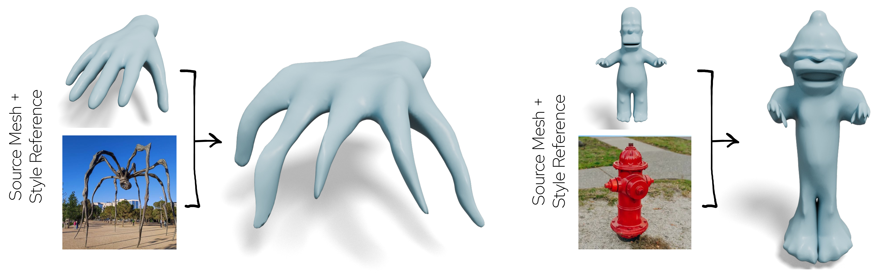
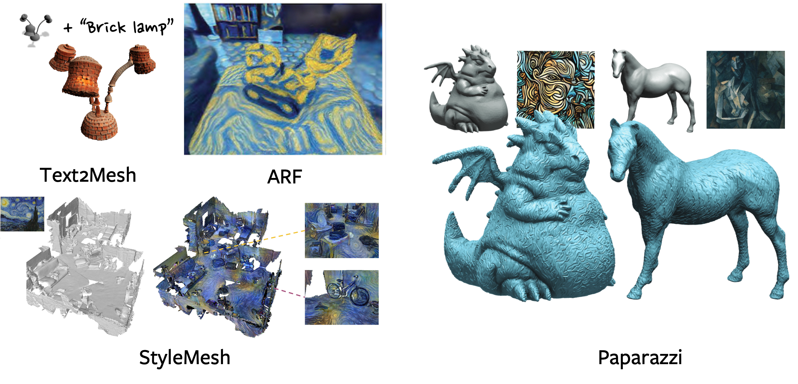
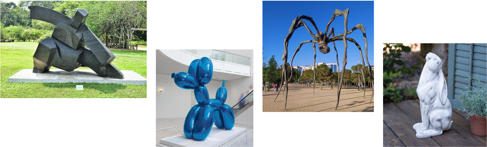
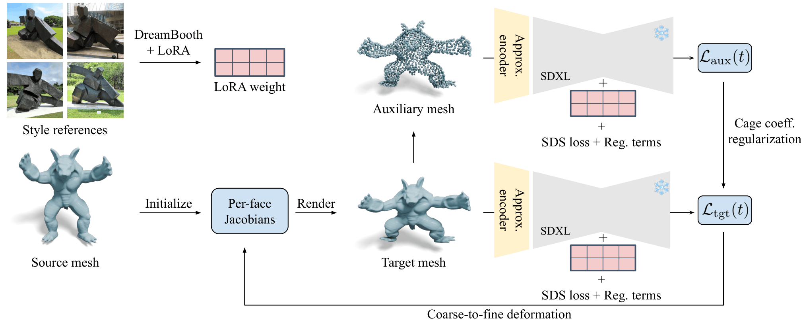
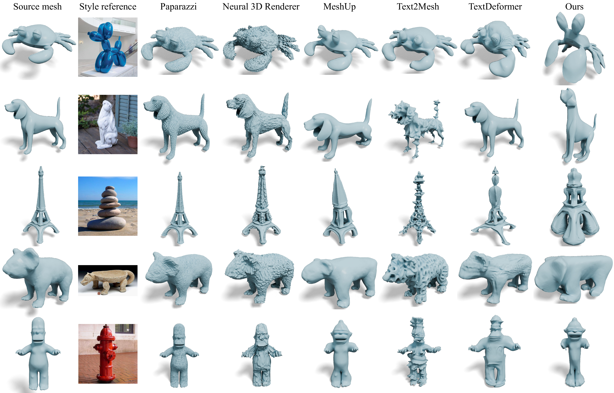
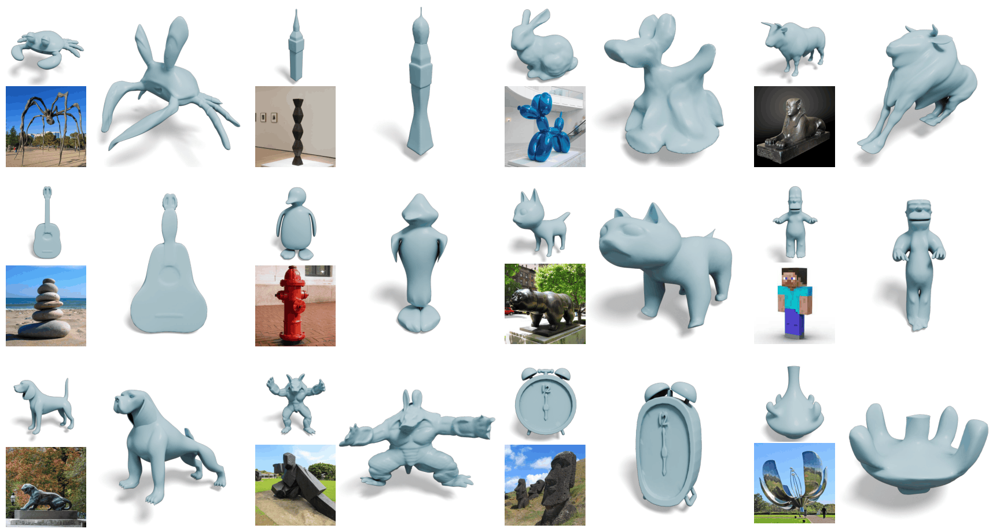
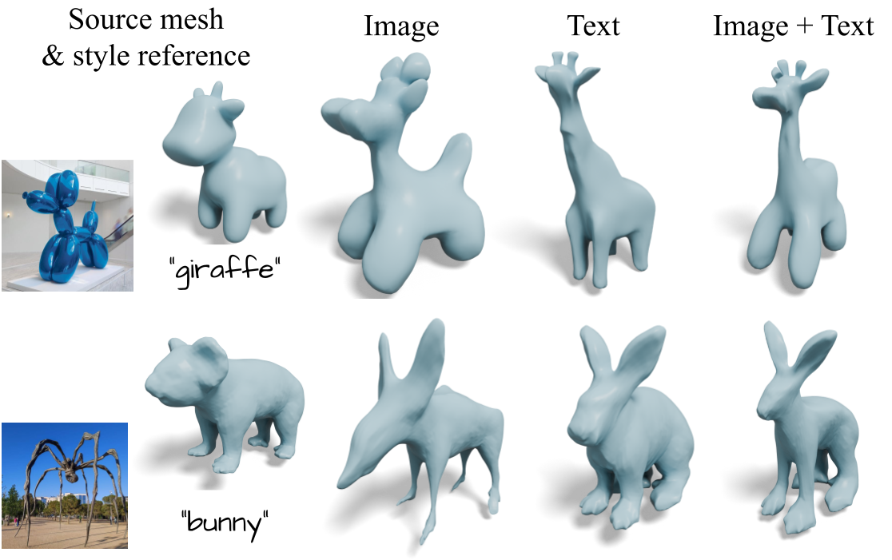
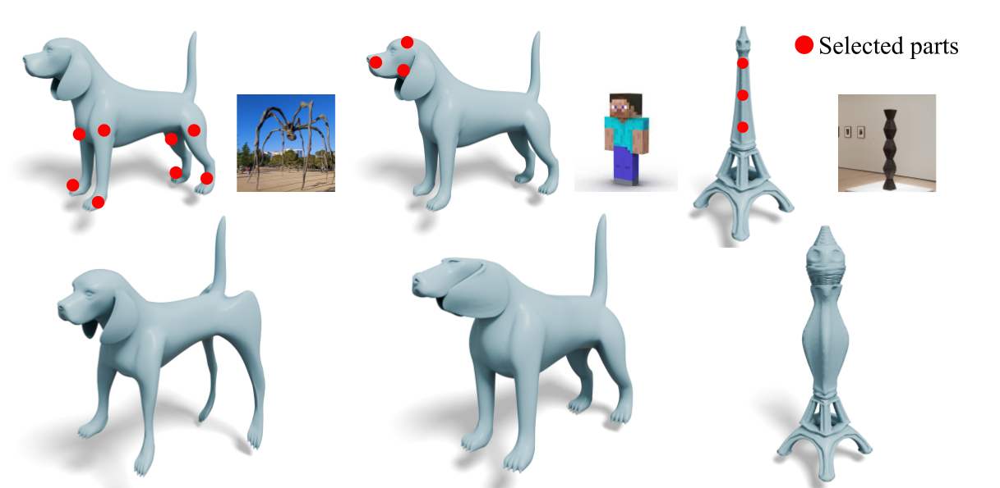
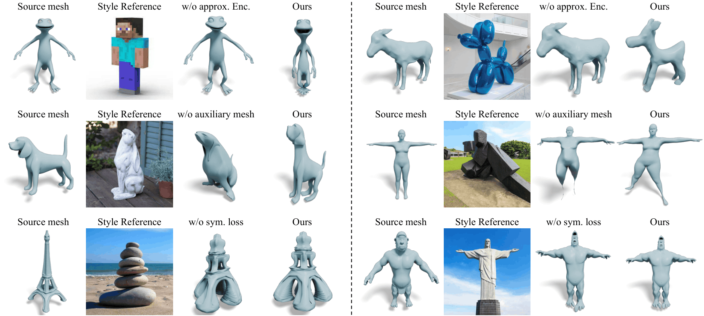

Recent generative models can create visually plausible 3D representations of objects. However, the generation process often allows for implicit control signals, such as contextual descriptions, and rarely supports bold geometric distortions beyond existing data distributions. We propose a geometric stylization framework that deforms a 3D mesh, allowing it to express the style of an image. While style is inherently ambiguous, we utilize pre-trained diffusion models to extract an abstract representation of the provided image. Our coarse-to-fine stylization pipeline can drastically deform the input 3D model to express a diverse range of geometric variations while retaining the valid topology of the original mesh and part-level semantics. We also propose an approximate VAE encoder that provides efficient and reliable gradients from mesh renderings. Extensive experiments demonstrate that our method can create stylized 3D meshes that reflect unique geometric features of the pictured assets, such as expressive poses and silhouettes, thereby supporting the creation of distinctive artistic 3D creations.
Following the success of 2D image style transfer, style transfer has been extended to 3D across various representations such as point clouds, meshes, NeRFs, and 3D Gaussian Splatting. Most of these works, however, are focusing on transferring high-frequency patch statistics of colors and textures. A parallel line of mesh-deformation methods does modify shape, but each minimizes a hand-crafted energy function tailored to a specific aesthetic (e.g., cubic stylization), and thus supports only a narrow class of styles.

Majority of style transfer methods in 3D focus on transferring high-frequency patch statistics of colors and textures.
Style is not only about color or texture. What truly distinguishes an artistic 3D creation often lies in its geometry: the blocky facets of a cubic sculpture, the balloon-like proportions of an inflated toy, the elongated limbs of Bourgeois's spider, or the expressive pose of a figure. Such traits are beyond the reach of patch statistics, and also resist unambiguous description through text.

Geometric style goes beyond surface texture — cubic sculptures, balloon-like proportions, elongated spider limbs, and expressive poses all define style through geometry.
Our framework takes a source 3D mesh and style reference images as input, and deforms the mesh to reflect their geometric style. The key idea is to use a personalized diffusion model, fine-tuned on the style reference images, as a style-specific optimizer that guides mesh deformation — covering a far broader range of styles than any hand-crafted energy can express.
Our geometric stylization framework takes a source mesh and style reference images as input, and deforms the mesh to exhibit the geometric style depicted in the images through a two-stage approach: (1) style extraction and (2) mesh deformation.

Drag to rotate · Scroll to zoom · Meshes may take a few seconds to load
Our method achieves expressive geometric deformation, accurately reflecting both coarse structure and fine detail from the style reference while preserving the identity of source mesh, baselines struggle to capture the intended geometry.


Our method can incorporate textual prompts alongside style reference images. The resulting meshes align with the text-described contents while maintaining the geometric style encoded in the style reference.

Our approach can transfer geometric style only to user-selected regions while preserving the original shape elsewhere.

We analyze the effects of the approximated VAE encoder (1st row), cage-coefficient regularization (2nd) and symmetry loss (3rd). The qualitative results show that each component is essential for producing high-fidelity stylization result.

[1] Leon A. Gatys, Alexander S. Ecker, and Matthias Bethge. Image Style Transfer Using Convolutional Neural Networks. CVPR 2016.
[2] Hiroharu Kato, Yoshitaka Ushiku, and Tatsuya Harada. Neural 3D Mesh Renderer. CVPR 2018.
[3] Hsueh-Ti Derek Liu, Michael Tao, and Alec Jacobson. Paparazzi: Surface Editing by Way of Multi-View Image Processing. ACM TOG 2018.
[4] Hsueh-Ti Derek Liu and Alec Jacobson. Cubic Stylization. ACM TOG 2019.
[5] Lukas Höllein, Justin Johnson, and Matthias Nießner. StyleMesh: Style Transfer for Indoor 3D Scene Reconstructions. CVPR 2022.
[6] Oscar Michel, Roi Bar-On, Richard Liu, Sagie Benaim, and Rana Hanocka. Text2Mesh: Text-Driven Neural Stylization for Meshes. CVPR 2022.
[7] Kai Zhang, Nick Kolkin, Sai Bi, Fujun Luan, Zexiang Xu, Eli Shechtman, and Noah Snavely. ARF: Artistic Radiance Fields. ECCV 2022.
[8] William Gao, Noam Aigerman, Thibault Groueix, Vladimir G. Kim, and Rana Hanocka. TextDeformer: Geometry Manipulation Using Text Guidance. SIGGRAPH 2023.
[9] Hyunwoo Kim, Itai Lang, Noam Aigerman, Thibault Groueix, Vladimir G. Kim, and Rana Hanocka. MeshUp: Multi-Target Mesh Deformation via Blended Score Distillation. 3DV 2025.
@inproceedings{choi2026geostyle,
title={Image-Guided Geometric Stylization of 3D Meshes},
author={Choi, Changwoon and Lee, Hyunsoo and Jambon, Clément and Vinker, Yael and Kim, Young Min},
booktitle={Proceedings of the IEEE/CVF Conference on Computer Vision and Pattern Recognition (CVPR)},
year={2026}
}